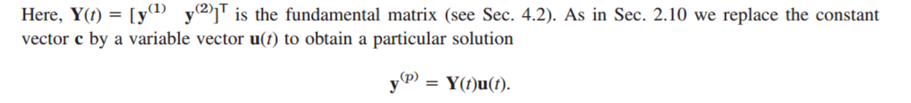

[Engineering Mathematics] Ch 4. Non-homogeneous linear systems of ODEs
자자자자,
Nth order ODE를 쉽게 풀려고,
1st order ODE n개로 바꾼다음에 행렬로 풀었다.
근데, 생각해보면, Linear homogeneous 만 지금까지 풀었다.
이번에는, Non-homogeneous linear ODE의 경우를 살펴보자.
![[Engineering Mathematics] Ch 4. Non-homogeneous linear systems of ODEs](./images/img-001.png)
2차 때 했던 것과 마찬가지로,
Genearl solution = homogeneous solution + Particualr solution
![[Engineering Mathematics] Ch 4. Non-homogeneous linear systems of ODEs](./images/img-002.png)
Homogeneous는 지금까지 한 방법으로 하면 되고, Particular 을 구해보자.
2차랑 , n차랑 동일하다.
1. Method of Undetermined Coefficeints
![[Engineering Mathematics] Ch 4. Non-homogeneous linear systems of ODEs](./images/img-003.png)
2차와 동일하게 r(X)의 형태에 따라서, yp(x)의 형태가 결정 된다.
상수는 ODE에 대입하면 derived가능.
Example)
![[Engineering Mathematics] Ch 4. Non-homogeneous linear systems of ODEs](./images/img-004.png)
![[Engineering Mathematics] Ch 4. Non-homogeneous linear systems of ODEs](./images/img-005.jpg)
2.Method of Variation of Parameters

2차 ODE에서와 동일하다.
시작은 homogeneous의 해가 2개있다고 해보자.(y1,y2)
그렇다면, 특정해는 y1(t) * u1(t) + y2(t) * u2(t) 라고 정의하고 대입후
ODE를 만족하는 u1(t), u2(t)를 구하는 방식이다.
위의 똑같은 예제를 다른 방식으로 풀어보자.
![[Engineering Mathematics] Ch 4. Non-homogeneous linear systems of ODEs](./images/img-007.jpg)